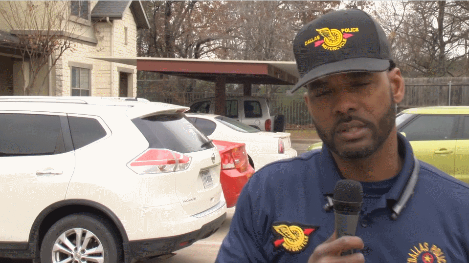

Hope for Children Foundation Toy Drive with Santa Cops 2019:
What should you expect at the Hope for Children Foundation Toy Drive?
The guests are given opportunities to enjoy a time of giving to children and making children and families very happy. The Hope for Children Foundation Toy Drive supported the 2019 Dallas Police Department Santa Cops Toy Drive and participated in the distribution of the toys to many children. The children receiving the new toys were so excited and happy. It means so much to all of us to see the precious faces of these children, smiling and expressing their joy at any given time.
Hope for Children Foundation and the Dallas Police Department give back to the community on a daily basis, not just at Christmas time. It is an honor for Hope for Children Foundation, to serve the children in this community and throughout the nation. On behalf of the children we serve, we thank everyone involved in the 2019 Hope for Children Foundation Toy Drive, the Dallas Police Department Santa Cops Toy Drive and the distribution of the toys. You really care!
On Saturday, December 15th, Hope for Children Foundation, its volunteers, together with Chief U. Reneé Hall , Dallas police officers, family members and volunteers from all divisions, participated in the 35th Annual Santa Cops program. Since 1984, the Dallas Police Department has provided assistance to members of the community by delivering toys and food during the Christmas season. The Santa Cops program was designed to assist members of the community who have been victims of crime and as a result of that act; are unable to provide for their children during the holidays. Other circumstances do exist which exclude victimization, in which a family is approved for the toys through the application process.
With your generous support we can reach children and families who may not receive any help except through these efforts. We have a great love for kids. Hope for Children Foundation is one of the best nonprofits to support children and families. Please place Hope for Children Foundation on your charity watch list and give generously today. Make a significant difference in the lives of children today, join us now.